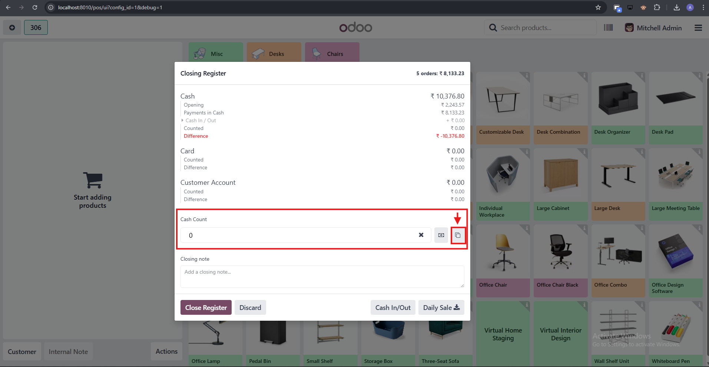
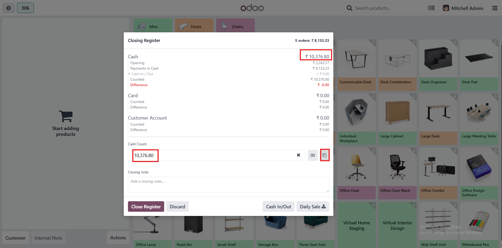

POS Copy Cash Count Amount
Adds a small Copy button to the
POS Closing Session popup that copies the
Expected cash amount into the Counted input saves time and reduces manual typing during cash counts.
Key Features
- Injects a copy button beside the "Open the money details popup" icon in the Closing Register popup.
- Copies the Expected cash amount to the Counted input with correct POS currency formatting.
- No extra configuration required. The button appears only when POS Closing Register popup is enabled (the same condition the original Close Session popup uses).
Usage Guide
- Open your POS session, choose to Close Register .
- In the Closing Register popup, click the small copy icon next to the money details icon.
- The Counted field will be filled with the Expected amount, automatically.
- Proceed with your normal cash counting and register close.
Screenshots
1. Display Copy Count Button

2. Expected Amount Copied
